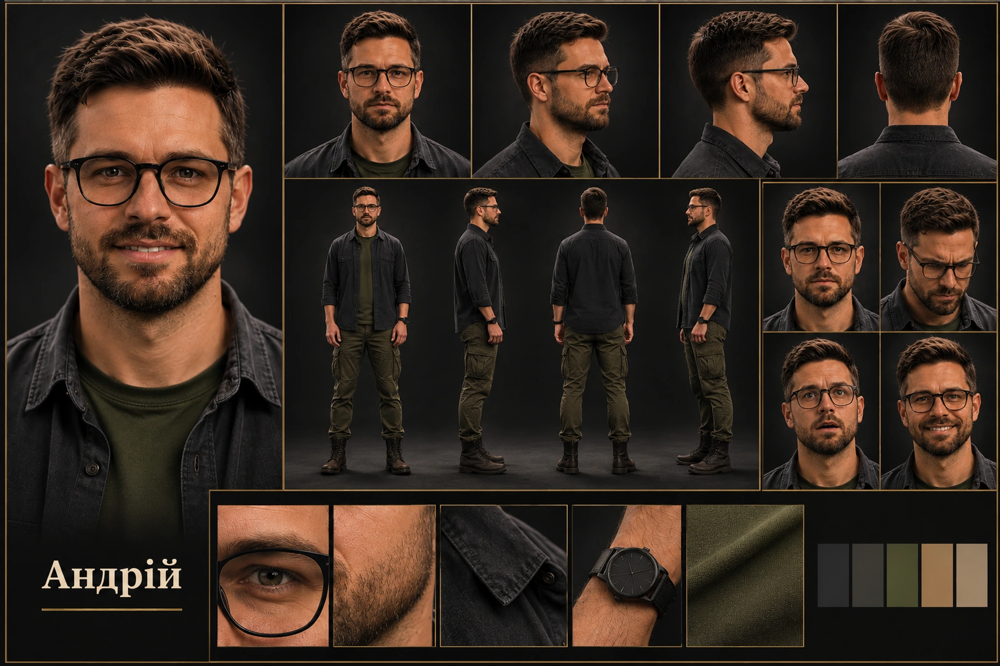

ЕПІЗОД · БОМБОСХОВИЩЕ
Дорога до захисту
Андрія будить вибух. Після наступних ударів він розуміє, що місто атакують ударні дрони та авіаційні боєприпаси. Не витрачаючи часу на речі, він бере документи й виходить із квартири. У коридорі зустрічає сусідку з маленькою донькою, і вони разом спускаються сходами.
На вулиці Андрій бачить, як мешканці поспішають до нового укриття. Люди допомагають одне одному: підхоплюють тих, хто впав, підтримують літніх і не залишають дітей самих. Після чергового вибуху потік на мить зупиняється, але знову рушає до входу.
На вході браслет Андрія, виданий лише кілька днів тому, подає короткий сигнал. Усередині він проходить через захищений шлюз і бачить не звичайний підвал, а облаштований комплекс із вентиляцією, освітленням, медичною допомогою, водою та їжею. Лише тоді він дозволяє собі видихнути й сісти.
ХАРАКТЕР І РОЛЬ У СЮЖЕТІ
Зосередитися на найважливішому
Під час евакуації думки Андрія звужуються до простих завдань: дійти до укриття, не зупинятися й не відставати від людей. Він не намагається з'ясувати всі подробиці атаки й не витрачає час на речі, які можна залишити. Його епізод показує переживання звичайного мешканця під час масованого удару та роботу нової системи цивільного захисту.
У перевірених фрагментах Андрій не демонструє характерницьких здібностей, не має визначеної професії чи окремої сюжетної лінії. Ці відомості не додаються без підтвердження рукописом.